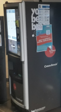

📰 NEWS 📰
Coffee machines piss !
Machines made available that are often non-operational can piss off your coffee. Despite several maintenance and repairs, this machine breaks down after not even 1 month.
I quote, « Damn, he just pissed my coffee, noo! My 1€ » Tiago, a great man.
We got in touch with the manager of this machine, unfortunately without answer.

School catering !
Formerly Super U which was the main place to relax. For scholarship recipients, it was a significant budget every noon, a sandwich is worth 2€ or more at the SuperU.
Now, the Crous de Creteil has put in place a school restoration (finally!), An immense time saving and money savings for scholarship holders
Rather good quality meal, cooked dishes, sandwiches or a quiche. Everyone is present to eat well at 1€